外拍活动NO.009 | 观音诞辰日的丰士庙
2026.08.12 · 摄影笔记 · 丰士村·海宁·嘉兴 · RX1R II (Sonnar T* 35mm F2)
拍完丰士老街，我们顺路去了丰士庙。那天正逢农历六月十九，庙里比平日热闹许多。香火、供品、纸钱和前来礼拜的人，把一个普通的午后变成了一场属于当地人的节日。
摄影日期：2026年8月1日（农历六月十九）
农历六月十九是观音成道纪念日。在代代相传的民间信仰与习俗中，这是一个重要的日子。
拍完丰士老街，我们顺路走进了丰士庙。
那天庙里比平日热闹许多。香火、供品、纸钱，以及前来礼拜的人，让这个普通的午后有了明显不同的节日气氛。
若有众生，闻是观世音菩萨，一心称名，
观世音菩萨即时观其音声，皆得解脱。
——选自《妙法莲华经·观世音菩萨普门品》
 庙里的香客在观音像前礼拜，节日的气氛从一进门便能感受到。
庙里的香客在观音像前礼拜，节日的气氛从一进门便能感受到。
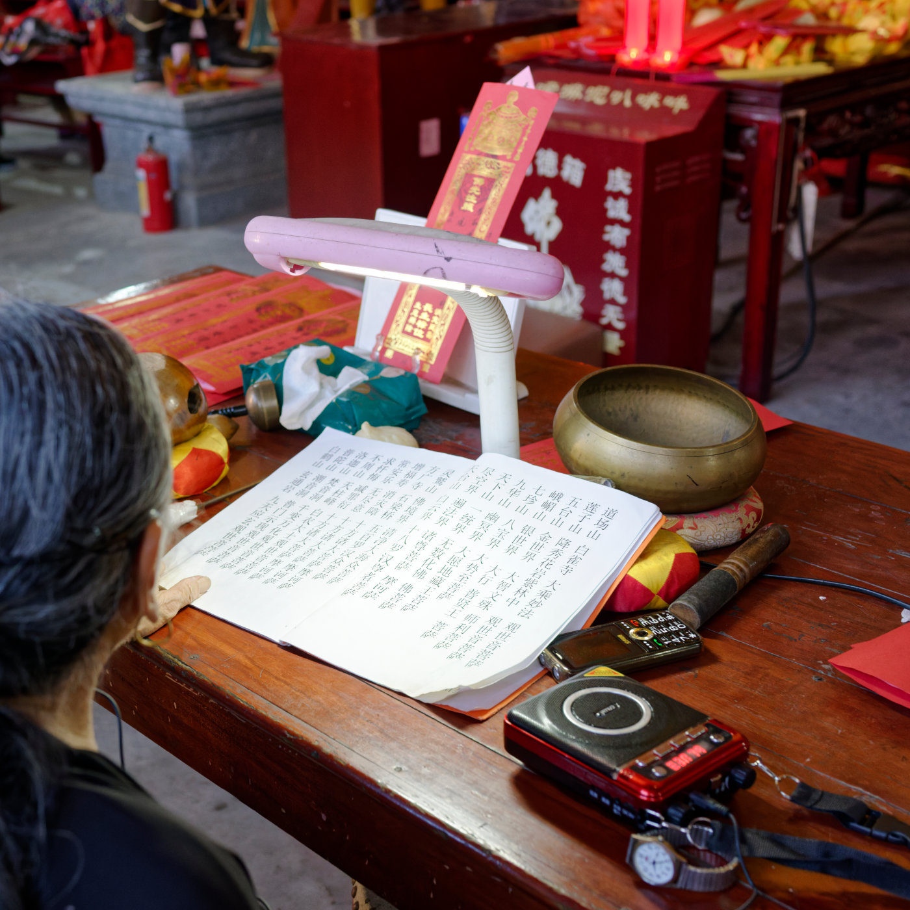
香客面前的供桌，经文、香炉和随手放置的物件共同构成了很生活化的祭祀场景。
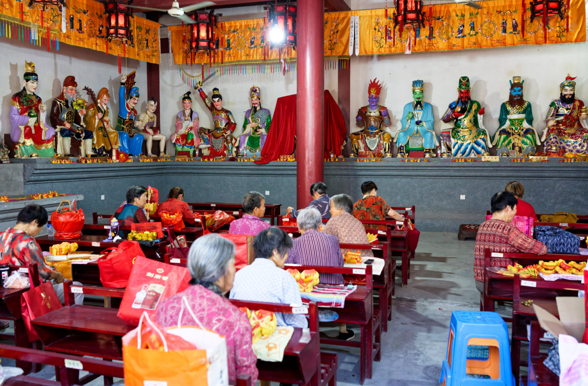
从侧面看去，前来礼拜的人们与满墙的神像构成了庙里的日常。
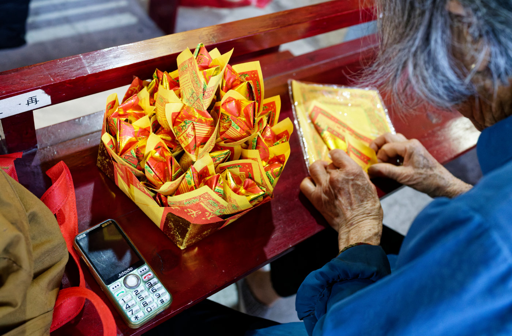
手中的纸钱正在一张张叠好，祭祀在这里是一件具体而琐碎的事情。
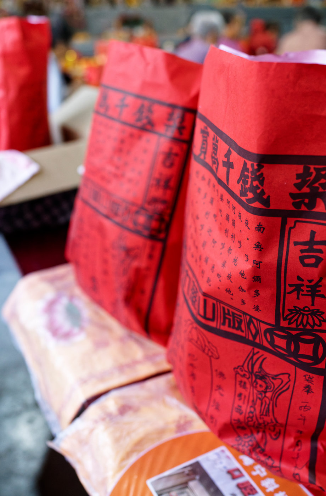
红色的纸钱堆在桌边，鲜明的色彩几乎成为这一天最直观的视觉记忆。
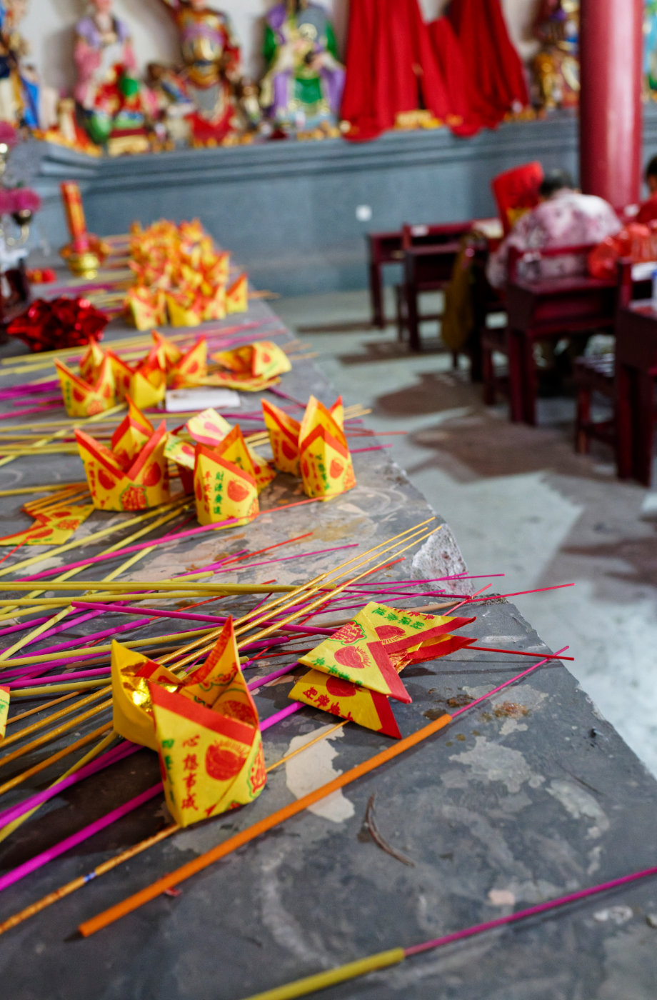
散落在壁龛上的纸钱和香，留下了人们刚刚活动过的痕迹。
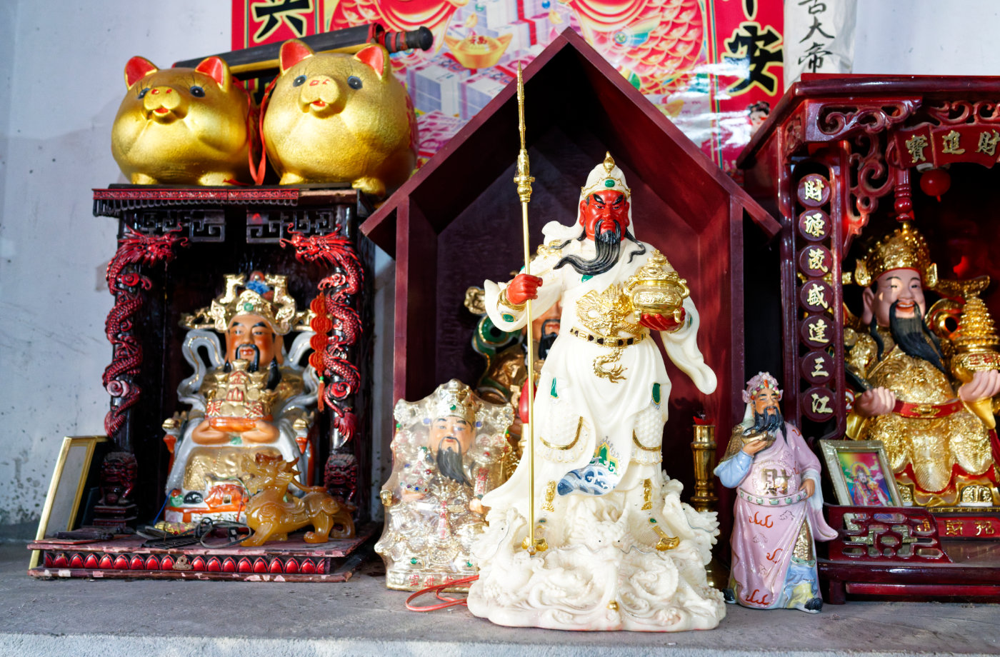
神龛里的诸神静静端坐，与眼前热闹的祭祀活动形成对照。
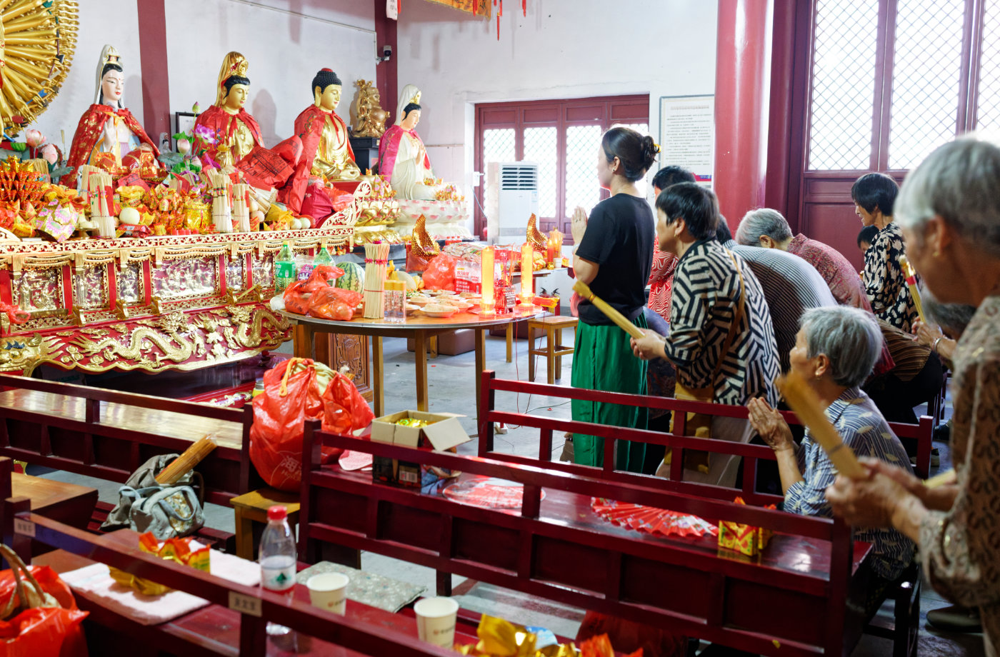
香客在神龛前礼拜，老人和年轻人共同出现在这个并不陌生的空间里。
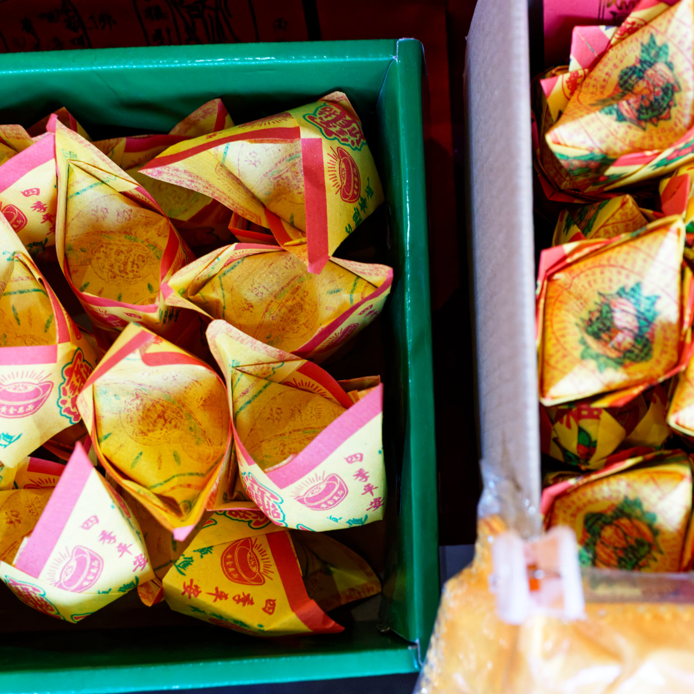
一盒叠好的纸钱，细小的纹样和颜色在近距离看起来颇有意思。
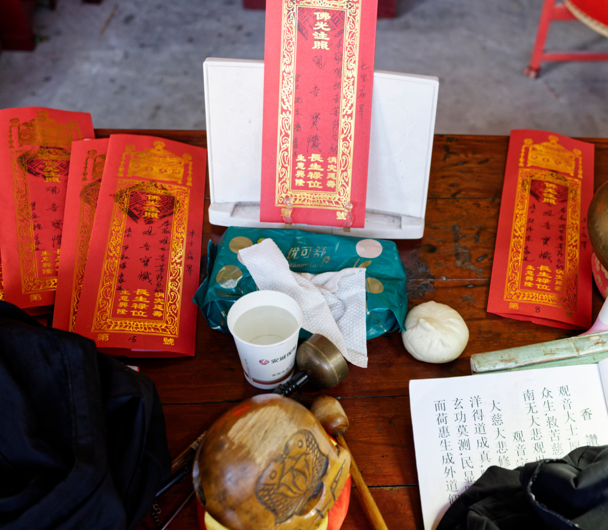
一张祭祀用的桌面，纸钱、供品和饮水混杂在一起，保留着现场最真实的样子。
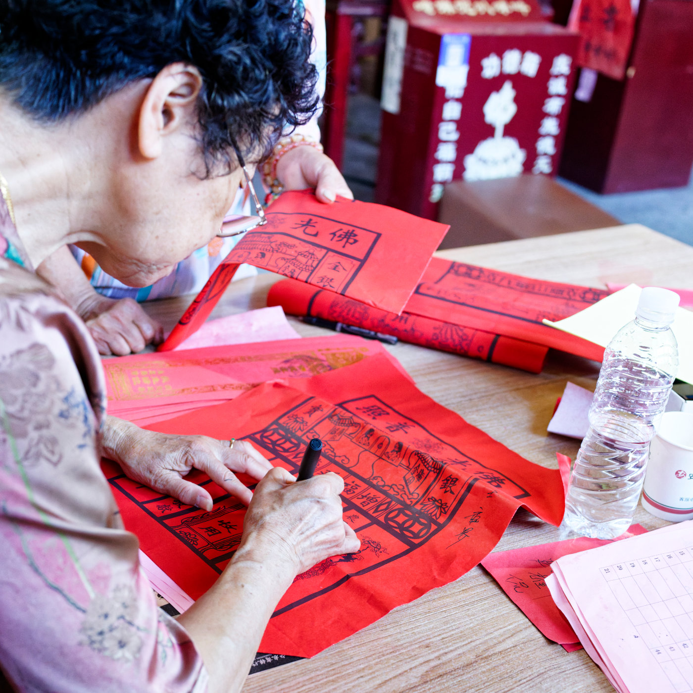
一位香客正在书写纸钱上的文字，仪式也因此变成了一件需要亲手完成的事情。
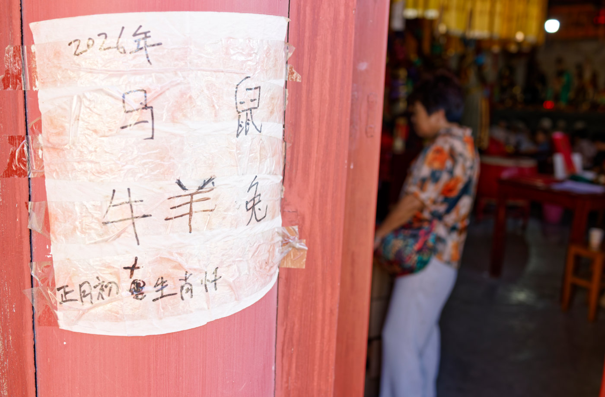
门柱上的手写纸条，像是从热闹的庙堂之外留下的一句轻声低语。